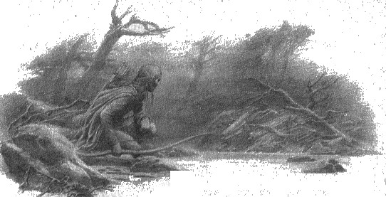

9
Beleg, gömmek için cesetlerin arasında Túrin’i aradı; ama onun cesedini bulamadı. O zaman, Húrin’in oğlunun hâlâ canlı olduğunu ve Angband’a götürüldüğünü anladı; ama yaraları iyileşene kadar zorunlu olarak Bar- en-Danwedh’de kaldı. Sonra, pek az umutla, orkların izini bulmaya çalışarak yola koyuldu ve Teiglin Geçitlerinin yakınlarında onların izlerine rastladı. Orklar orada bölünmüşlerdi ve bazıları Brethil Ormanı’nın saçaklarından geçip Brithiach Geçidi’ne gitmiş, diğerleri batıya dönmüştü; ve Beleg’e göre, büyük hızla doğrudan Angband’a gidenleri, Anach Geçidi’ne yönelenleri izlemesi gerektiği aşikardı. Bu yüzden Dimbar’dan geçerek yoluna devam etti ve Anach Geçidi’nden geçip Ered Gorgoroth’a, Dehşet Dağı’na ve dolayısıyla Taur-nu-Fuin Yaylalarına, bir dehşet ve kara büyü, bir şaşkınlık ve ümitsizlik bölgesi olan Gecenin Altındaki Orman’a geçti.
O habis yerde geceleyen Beleg, tesadüf eseri ağaçların arasında küçük bir ışık gördü ve o yana gittiğinde, büyük, ölü bir ağacın dibinde uyuyan bir elf' buldu: Elfin başının yanında bir lamba vardı ve perdesi kaymıştı. Beleg uyuyan elfi uyandırdı, ona lembas verdi ve onu bu korkunç yere hangi kaderin getirdiğini sordu; ve elf , adının Guilin oğlu Gwindor olduğunu söyledi.
Beleg üzüntüyle ona bakakaldı; çünkü Gwindor, Sayısız Gözyaşı Savaşı’nda Nargothrond Beyi’nin atını Angband kapılarına sürdüğü ve orada yakalandığı zamanki eski şeklinin ve mizacının beli bükük, ürkek bir gölgesine dönüşmüştü. Morgoth’un tutsak aldığı Noldor’un pek azı öldürülürdü, çünkü metal ve mücevher bulmak konusunda becerikliydiler; ve Gwindor öldürülmemiş, kuzeydeki madenlerde çalıştırılmıştı. Bu Noldor’da pek çok Fëanor lambası vardı, bunlar ince zincir ağla asılan kristallerdi ve kristaller içten gelen mavi bir ışıkla parlardı, gecenin ya da tünellerin karanlığında yol bulmak için harikaydılar; onlar bu lambaların sırrını bilmiyorlardı. Madendeki elfler böylece kendilerine çıkış yolu oymuş, madenlerin karanlığından kaçmışlardı; ama Gwindor demirhanelerde çalışan birinden küçük bir kılıç edinmişti ve bir kaya geçidinde çalışırken aniden nöbetçilere denk gelmişti. Kaçmayı başarmıştı, ama bir eli kesilmişti; ve şimdi bitkin düşmüş halde, Taur-nu-Fuin’in koca çamlarının altında yatıyordu.
Beleg Gwindor’dan, ilerideki, kendisinin de saklandığı küçük ork çetesinin elinde tutsak bulunmadığını ve hızla ilerlediklerini öğrendi: bir ileri koldu belki, Angband’a rapor götürüyordu. Bu haberi alınca Beleg ümitsizliğe kapıldı: çünkü o, Teiglin Geçitlerinden sonra gördüğü, batıya dönen izlerin, orklarda âdet olduğu üzere yiyecek ve yağma peşinde çapulculuğa çıkan ve şimdi çok daha batıdaki “Dar Diyar”, yani uzun Sirion Geçidi boyunca Angband’a dönüyor olabilecek, daha büyük bir orduya ait olduğunu tahmin etmişti. Eğer öyleyse, tek umudu Brithiach Geçidi’ne geri dönmek ve sonra kuzeye, Tol Sirion’a gitmekti. Ama buna yeni karar vermişti ki, ormanda, güneyden yaklaşan büyük bir ordunun gürültüsünü duydular; ve bir ağacın dallarına saklanarak Morgoth’un hizmetkarlarının, ganimetler ve tutsaklarla yüklü, kurtlarla çevrilmiş bir biçimde, ağır ağır geçmesini izlediler. Ve kırbaçlarla güdülen, elleri zincirli Túrin’i gördüler.
Bunun üzerine Beleg Taur-nu-Fuin’e neden gittiğini söyledi ve Gwindor onu arayışından vazgeçirmeye çalıştı, Beleg’in Túrin’i bekleyen ıstıraba ortak olmasından başka bir işe yaramayacağını söyledi. Ama Beleg Túrin’i terk etmeye yanaşmadı ve kendisi ümitsiz olmasına rağmen, Gwindor’un yüreğine umut verdi; ve orkları takip ederek yola birlikte devam ettiler, onların peşinden ormandan çıktılar ve Anfauglith’in çıplak kum tepelerine doğru inen yüksek yamaçlara geldiler. Orklar orada, Thangorodrim’in zirvelerini gören bir yerde, çıplak bir vadide kamp kurdular ve kampın çevresine kurt nöbetçiler diktiler. Orada alem yapmaya, ganimetleriyle kendilerine ziyafet çekmeye başladılar; ve tutsaklarına işkence ettikten sonra sarhoş uykusuna daldılar. Artık gün solmuş, hava iyice kararmıştı. Batıdan büyük bir fırtına yaklaşıyordu ve Beleg ile Gwindor sessizce kampa yaklaşırken uzaklarda gökgürültüsü patlıyordu.
Bütün kamp uykuya daldığında, Beleg yayını aldı ve karanlıkta, güneydeki dört kurt nöbetçiyi sessizce, teker teker vurdu. Sonra, büyük tehlikeye atılarak kampa girdiler ve Túrin’i, el ve ayaklan zincirlenmiş, bir ağaca bağlanmış halde buldular. Ona işkence edenlerin fırlattığı bıçaklar çevresinde ağaç gövdesine saplanmıştı, ama kendisi yaralanmamışti; ve uyuşturulmuş olduğundan kendinde değildi ya da mutlak bitkinlik içinde kendinden geçmişti. Sonra Beleg ile Gwindor ağaçtaki bağları kesti ve Túrin’i alıp kamptan götürdü. Ama uzağa taşınamayacak kadar ağırdı ve kampın üzerindeki yamaçta, yüksekteki alıç kümesinden daha ileri gidemediler. Onu orada yere yatırdılar; artık fırtına daha da yaklaşmıştı ve Thangorodrim’in üzerinde şimşekler çakıyordu. Beleg kılıcı Anglachel’i çekli ve onu kullanarak Túrin’in bağlarını kesti; ama o gün kader daha güçlüyclü, çünkü Kara Elf Eöl’ün kılıcı elinde kaydı ve Túrin’in ayağını yaraladı.
Bunun üzerine Túrin öfke ve korku içinde aniden uyandı ve loşlukta, yalınkılıç üzerine eğilmiş bir şekil görünce, orkların yine ona işkence etmeye geldiğini sanarak büyük bir feryatla ayağa fırladı; ve karanlıkta onunla mücadele ederek Anglachel’i kaptı ve Beleg Cúthalion’u düşman sanarak öldürdü.
Ama kendini serbest bulması üzerine, canını hayali düşmanlarına pahalıya satmaya hazırlanarak doğrulurken, tepelerinde büyük bir şimşek çaktı ve onun ışığında Beleg’in yüzünü gördü. Sonra Túrin, taş gibi donarak, sessizce o dehşetli ölüme bakakaldı ve ne yaptığını anladı; ve çevrelerinde titreşen şimşeklerin aydınlığında yüzü o kadar korkunçtu ki, Gwindor yere büzüldü ve bakışlarını kaldırmaya cesaret edemedi.
Ama şimdi, aşağıdaki kampta orklar hem fırtına, hem de Túrin’in feryadı yüzünden uyanmıştı ve Túrin’in kaybolduğunu fark etmişti; ama onu aramaya kalkmadılar, çünkü batıdan gelen, Deniz’in ötesindeki büyük düşmanları tarafından gönderildiğine inandıkları gökgürültüsü yüzünden içleri dehşetle dolmuştu. Sonra bir rüzgar yükseldi ve şiddetli yağmurlar yağdı ve Taur-nu-Fuin’in yükseklerinden seller geleli; ve Gwindor Túrin’e bağırsa da, onu büyük tehlike hakkında uyarsa da, Túrin yanıt vermedi kıpırdamadan, ağlamadan, esaret bağlarını keserken kendi elleriyle öldürdüğü Beleg Cúthalion’un karanlık ormanda yatan cesedinin yanında oturdu.
Sabah geldiğinde fırtına Lothlann’ın üzerinden doğuya geçmişti ve sıcak ve parlak güz güneşi yükselmişti; ama bundan da neredeyse gökgürültüsü kadar nefret eden ve Túrin’in çok uzaklara kaçmış ve kaçışına dair tüm izlerin silinip gitmiş olması gerektiğine inanan orklar, Angband’a dönmeye can atarak telaşla yola çıktılar. Gwindor, uzaktan onların Anfauglith’in buharları tüten kumlarının üzerinden kuzeye yürüdüklerini gördü. Böylece, orklar Morgoth’a elleri boş gittiler ve çılgına dönmüş, bilinçsiz bir halde Taur-nu-Fuin yamaçlarında oturan, bağlarından da ağır bir yük sırtlanmış olan Húrin’in oğlunu geride bıraktılar.
Sonra Gwindor, Beleg’in gömülmesine yardım etmesi için Túrin’i canlandırdı ve Túrin uykuda yürüyen biri gibi kalktı; ve birlikte Beleg’i sığ bir mezara yatırdılar ve siyah porsukağacından yapılmış büyük yayı Belthronding’i yanına bıraktılar. Ama Gwindor, faydasızca toprakta yatmak yerine Morgoth’un hizmetkarlarından intikam almasının daha iyi olacağını söyleyerek, dehşetli kılıç Anglachel’i yanına aldı; yabanda onlara güç vermesi için Melian’ın lembas'ını da aldı.
Kadim Günlerde Beleriand Ormanlarına sığınanların en beceriklisi, dostların en sadığı olan Sağlamyay Beleg, en sevdiği kişinin ellerinde bu şekilde öldü; ve Túrin’in yüzüne kazınan bu acı bir daha asla solmadı.
Ama Nargothrond Elfi’nin cesareti ve gücü yenilendi, ve Taur-nu-Fuin’den ayrılarak, Túrin’i alıp götürdü. Uzun, acılı yolda yürürlerken Túrin bir kez bile konuşmadı ve sene solar, kuzey topraklarına kış gelirken, bir amacı ya da dileği olmayan biri gibi dolandı. Ama Gwindor her zaman yanındaydı, onu koruyor, ona rehberlik ediyordu; ve böylece Sirion üzerinden batıya geçtiler ve sonunda Güzel Göl’e ve Eithel Ivrin’e, Narog’un Gölge Dağlarının dibinde doğduğu pınarlara geldiler. Orada, Gwindor Túrin’le konuştu ve şunları söyledi: “Uyan, Húrin oğlu Túrin! Ivrin’in gölünde sonsuz kahkaha vardır. O, bitmek tükenmek bilmez billur kaynaklardan beslenir ve kadim günlerde onun güzelliğini yaratan Suların Efendisi Ulmo tarafından kirlenmekten korunur.” Bunun üzerin Túrin diz çöktü ve sudan içti; ve aniden kendini yere fırlattı ve sonunda gözyaşları serbest kaldı ve Túrin deliliğinden kurtuldu.
Orada Beleg için bir şarkı yaptı ve ona Laer Cú Beleg, Büyük Yayın Şarkısı adını verdi, tehlikeye aldırmadan yüksek sesle söyledi onu. Ve Gwindor kılıç Anglachel’i onun ellerine verdi ve Túrin onun ağır ve güçlü olduğunu, büyük bir güce sahip olduğunu anladı; ama çeliği kararmış, donuklaşmıştı ve kenarları körelmişti. “Bu tuhaf bir kılıçtır ve Orta Dünya’da gördüğüm hiçbir kılıca benzemez. Tıpkı senin gibi, Beleg’in yasını tutuyor. Lâkin teselli bul; zira ben, doğduğum ve ıstırabımdan önce yaşadığım Naıgothrond’a, Finarfin Evi’ne dönüyorum. Sen de benimle gelecek, şifa görecek, yenileneceksin.”
“Sen kimsin?” dedi Túrin.
“Gezgin bir elf, Beleg’in rastladığı ve teselli ettiği, kaçak bir köle,” dedi Gwindor. “Lâkin evvelde Guilin oğlu Gwindor’dum, bir Nargothrond beyiydim, ta ki Nirnaeth Arnoediad’a gidene ve Angband’da esir edilene dek.”
“O zaman, Dor-lómin savaşçısı, Galdor oğlu Húrin’i gördün mü?” dedi Túrin.
“Onu görmedim,” dedi Gwindor. “Ama Angband’da, Morgoth’a meydan okumaya devam ettiğini anlatan bir söylenti dolaşıyor; ve Morgoth ona ve tüm ailesine lanet etmiş.”
“Buna inanırım,” dedi Túrin.
Sonra kalktılar ve Eithel Ivrin’den ayrılarak, Narog kıyıları boyunca güneye doğru yol aldılar, ta ki elf izcileri tarafından yakalanana ve tutsak edilerek gizli kaleye getirilene dek.
Túrin Nargothrond’a bu şekilde geldi.